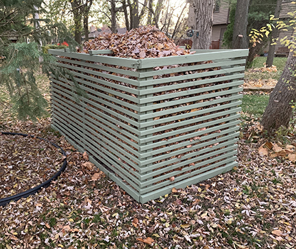
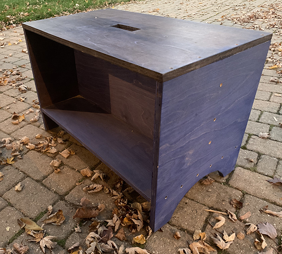
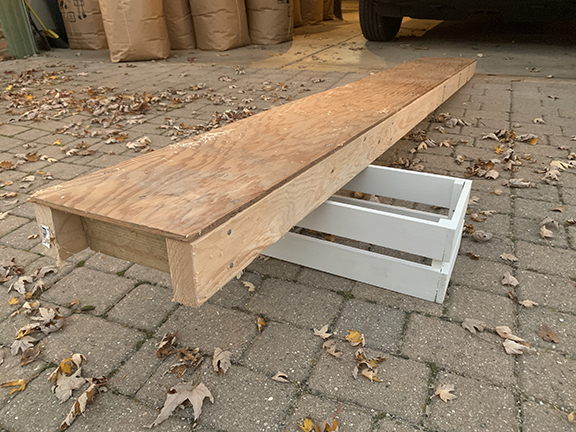

Making things from wood
My dad gave me my first hammer when I was probably 8 or 9 years old. He pointed to the scrap bin and a coffee can of nails and said something like “You can use any wood in of that pile and the nails in this can.” My dad has been a carpenter his whole life, really since he was a kid. I pounded most of the nails from that coffee can into those wood scraps all summer. Eventually you develop an understanding with a hammer, any tool really, and learn how to use it effectively. Everyone should take some time to hammer some nails.
Compost bin
Our yard has a lot of big trees around it and we get a lot of leaves in the fall. Partly to minimize the amount of compostable material that needs to be hauled away and partly out of curiosity, I built a 4ft x 8ft compost bin last summer.
The frame is made out of 2in x 3in lumber with 1in. x 2in. lumber for the slats. I mulled over the plans for several weeks, but when I finally committed, I was able to get the materials and build over a weekend.
Work bench
This is the first and smallest of three work benches I am planning for my garage. It is patterned after a similar bench I remember my dad using when I was a kid.
Even though I am planning to build some larger (and more practical) benches, this bench will continue to be a useful piece of shop furniture. It is easy to move around and provides a clampable workspace without taking up too much room. The blue stain used is the same as the dice tray described later on this page.
Ladder plank
This plank was put together with an old scrap of plywood and some new 2in. x 4in. lumber for the frame. Like the blue work bench, it is also patterned after a plank I remember my dad using when I was a kit.
I built this plank to be able to paint the walls over an open stairwell. Since then I have used it to help me paint the outside of my house. Most of the time it lives in the garage under the car.
Dice trays
I had a vision for a dice rolling tray that had two tiers, one for holding dice and one for rolling them. I also wanted a blue and orange tray, but I just couldn't find one so I made one.
The sides are 1in. x 3in. with a 1/4in. plywood bottom. The liner is crafting felt and the stain is a water-based, with a wax finish. It's a little big and kind of heavy, but it was a fun project.
Since then I made some smaller, lighter weight trays. Mostly made with thinner pieces of trim molding, still finished with water-based stain and furniture wax. The green felt liner in this tray started pilling pretty quickly. Future versions will need a hardier felt, maybe something for a pool table.